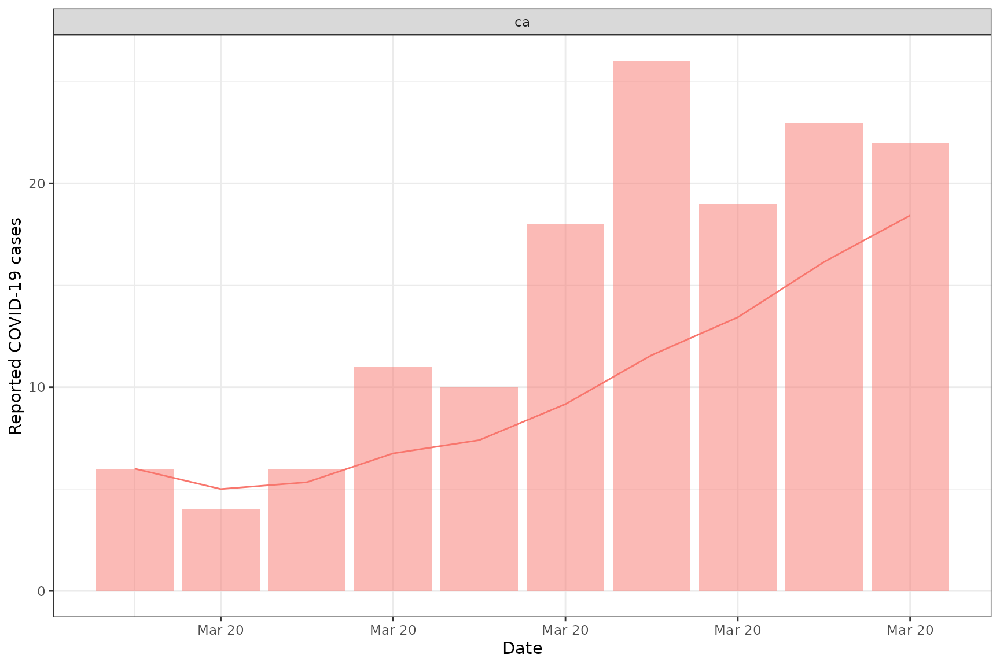
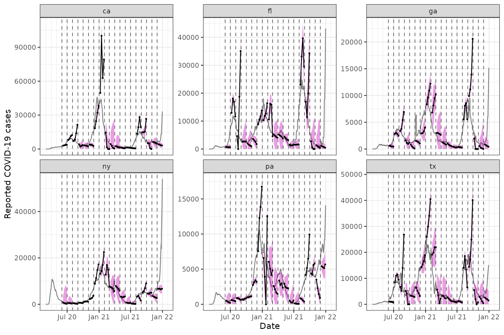

A central tool in the epiprocess package is
epi_slide(), which is based on the powerful functionality
provided in the slider
package. In epiprocess, to “slide” means to apply a
computation—represented as a function or formula—over a sliding/rolling
data window. The function always applies the slide inside each group and
the grouping is assumed to be across all group keys of the
epi_df (this is the grouping used by default if you do not
group the epi_df with a group_by()).
By default, the .window_size units depend on the
time_type of the epi_df, which is determined
from the types in the time_value column of the
epi_df. See the “Details” in epi_slide() for
more.
As in getting started guide, we’ll fetch daily reported COVID-19
cases from CA, FL, NY, and TX (note: here we’re using new, not
cumulative cases) using the epidatr
package, and then convert this to epi_df format.
The data is fetched with the following query:
edf <- pub_covidcast(
source = "jhu-csse",
signals = "confirmed_incidence_num",
geo_type = "state",
time_type = "day",
geo_values = "ca,fl,ny,tx,ga,pa",
time_values = epirange(20200301, 20211231),
) %>%
select(geo_value, time_value, cases = value) %>%
arrange(geo_value, time_value) %>%
as_epi_df()The data has 2,684 rows and 3 columns.
Optimized rolling mean and sums
For the two most common sliding operations, we offer two optimized
versions: epi_slide_mean() and
epi_slide_sum(). This example gets the 7-day trailing
average of the daily cases. Note that the name of the column(s) that we
want to average is specified as the first argument of
epi_slide_mean().
edf %>%
group_by(geo_value) %>%
epi_slide_mean("cases", .window_size = 7, na.rm = TRUE) %>%
ungroup() %>%
head(10)## An `epi_df` object, 10 x 4 with metadata:
## * geo_type = state
## * time_type = day
## * as_of = 2024-08-23 02:40:48.296938
##
## # A tibble: 10 × 4
## geo_value time_value cases slide_value_cases
## * <chr> <date> <dbl> <dbl>
## 1 ca 2020-03-01 6 6
## 2 ca 2020-03-02 4 5
## 3 ca 2020-03-03 6 5.33
## 4 ca 2020-03-04 11 6.75
## 5 ca 2020-03-05 10 7.4
## 6 ca 2020-03-06 18 9.17
## 7 ca 2020-03-07 26 11.6
## 8 ca 2020-03-08 19 13.4
## 9 ca 2020-03-09 23 16.1
## 10 ca 2020-03-10 22 18.4Note that we passed na.rm = TRUE to
data.table::frollmean() via ... to
epi_slide_mean.
The following computes the 7-day trailing sum of daily cases (and
passed na.rm to data.table::frollsum()
similarly):
edf %>%
group_by(geo_value) %>%
epi_slide_sum("cases", .window_size = 7, na.rm = TRUE) %>%
ungroup() %>%
head(10)## An `epi_df` object, 10 x 4 with metadata:
## * geo_type = state
## * time_type = day
## * as_of = 2024-08-23 02:40:48.296938
##
## # A tibble: 10 × 4
## geo_value time_value cases slide_value_cases
## * <chr> <date> <dbl> <dbl>
## 1 ca 2020-03-01 6 6
## 2 ca 2020-03-02 4 10
## 3 ca 2020-03-03 6 16
## 4 ca 2020-03-04 11 27
## 5 ca 2020-03-05 10 37
## 6 ca 2020-03-06 18 55
## 7 ca 2020-03-07 26 81
## 8 ca 2020-03-08 19 94
## 9 ca 2020-03-09 23 113
## 10 ca 2020-03-10 22 129General sliding with a formula
The previous computations can also be performed using
epi_slide(), which can be used for more general sliding
computations (but is much slower for the specific cases of mean and
sum).
The same 7-day trailing average of daily cases can be computed by
passing in a formula for the first argument of
epi_slide():
edf %>%
group_by(geo_value) %>%
epi_slide(~ mean(.x$cases, na.rm = TRUE), .window_size = 7) %>%
ungroup() %>%
head(10)## An `epi_df` object, 10 x 4 with metadata:
## * geo_type = state
## * time_type = day
## * as_of = 2024-08-23 02:40:48.296938
##
## # A tibble: 10 × 4
## geo_value time_value cases slide_value
## * <chr> <date> <dbl> <dbl>
## 1 ca 2020-03-01 6 6
## 2 ca 2020-03-02 4 5
## 3 ca 2020-03-03 6 5.33
## 4 ca 2020-03-04 11 6.75
## 5 ca 2020-03-05 10 7.4
## 6 ca 2020-03-06 18 9.17
## 7 ca 2020-03-07 26 11.6
## 8 ca 2020-03-08 19 13.4
## 9 ca 2020-03-09 23 16.1
## 10 ca 2020-03-10 22 18.4If your formula returns a data.frame, then the columns of the
data.frame will be unpacked into the resulting epi_df. For
example, the following computes the 7-day trailing average of daily
cases and the 7-day trailing sum of daily cases:
edf %>%
group_by(geo_value) %>%
epi_slide(
~ data.frame(cases_mean = mean(.x$cases, na.rm = TRUE), cases_sum = sum(.x$cases, na.rm = TRUE)),
.window_size = 7
) %>%
ungroup() %>%
head(10)## An `epi_df` object, 10 x 5 with metadata:
## * geo_type = state
## * time_type = day
## * as_of = 2024-08-23 02:40:48.296938
##
## # A tibble: 10 × 5
## geo_value time_value cases cases_mean cases_sum
## * <chr> <date> <dbl> <dbl> <dbl>
## 1 ca 2020-03-01 6 6 6
## 2 ca 2020-03-02 4 5 10
## 3 ca 2020-03-03 6 5.33 16
## 4 ca 2020-03-04 11 6.75 27
## 5 ca 2020-03-05 10 7.4 37
## 6 ca 2020-03-06 18 9.17 55
## 7 ca 2020-03-07 26 11.6 81
## 8 ca 2020-03-08 19 13.4 94
## 9 ca 2020-03-09 23 16.1 113
## 10 ca 2020-03-10 22 18.4 129Note that this formula has access to all non-grouping columns present
in the original epi_df object and must refer to them with
the prefix .x$.... As we can see, the function
epi_slide() returns an epi_df object with a
new column appended that contains the results (from sliding), named
slide_value as the default.
Some other information is available in additional variables:
-
.group_keyis a one-row tibble containing the values of the grouping variables for the associated group -
.ref_time_valueis the reference time value the time window was based on
# Returning geo_value in the formula
edf %>%
group_by(geo_value) %>%
epi_slide(~ .x$geo_value[[1]], .window_size = 7) %>%
ungroup() %>%
head(10)## An `epi_df` object, 10 x 4 with metadata:
## * geo_type = state
## * time_type = day
## * as_of = 2024-08-23 02:40:48.296938
##
## # A tibble: 10 × 4
## geo_value time_value cases slide_value
## * <chr> <date> <dbl> <chr>
## 1 ca 2020-03-01 6 ca
## 2 ca 2020-03-02 4 ca
## 3 ca 2020-03-03 6 ca
## 4 ca 2020-03-04 11 ca
## 5 ca 2020-03-05 10 ca
## 6 ca 2020-03-06 18 ca
## 7 ca 2020-03-07 26 ca
## 8 ca 2020-03-08 19 ca
## 9 ca 2020-03-09 23 ca
## 10 ca 2020-03-10 22 ca
# Returning time_value in the formula
edf %>%
group_by(geo_value) %>%
epi_slide(~ .x$time_value[[1]], .window_size = 7) %>%
ungroup() %>%
head(10)## An `epi_df` object, 10 x 4 with metadata:
## * geo_type = state
## * time_type = day
## * as_of = 2024-08-23 02:40:48.296938
##
## # A tibble: 10 × 4
## geo_value time_value cases slide_value
## * <chr> <date> <dbl> <date>
## 1 ca 2020-03-01 6 2020-02-24
## 2 ca 2020-03-02 4 2020-02-25
## 3 ca 2020-03-03 6 2020-02-26
## 4 ca 2020-03-04 11 2020-02-27
## 5 ca 2020-03-05 10 2020-02-28
## 6 ca 2020-03-06 18 2020-02-29
## 7 ca 2020-03-07 26 2020-03-01
## 8 ca 2020-03-08 19 2020-03-02
## 9 ca 2020-03-09 23 2020-03-03
## 10 ca 2020-03-10 22 2020-03-04While the computations above do not look very useful, these can be used as building blocks for computations that do something different depending on the geo_value or ref_time_value.
Slide the tidy way
Perhaps the most convenient way to setup a computation in
epi_slide() is to pass in an expression for tidy
evaluation. In this case, we can simply define the name of the new
column directly as part of the expression, setting it equal to a
computation in which we can access any columns of .x by
name, just as we would in a call to dplyr::mutate(), or any
of the dplyr verbs. For example:
slide_output <- edf %>%
group_by(geo_value) %>%
epi_slide(cases_7dav = mean(cases, na.rm = TRUE), .window_size = 7) %>%
ungroup() %>%
head(10)In addition to referring to individual columns by name, you can refer
to epi_df time window as .x
(.group_key and .ref_time_value are still
available). Also, the tidyverse “pronouns” .data and
.env can also be used if you need distinguish between the
data and environment.
As a simple sanity check, we visualize the 7-day trailing averages computed on top of the original counts:
library(ggplot2)
theme_set(theme_bw())
ggplot(slide_output, aes(x = time_value)) +
geom_col(aes(y = cases, fill = geo_value), alpha = 0.5, show.legend = FALSE) +
geom_line(aes(y = cases_7dav, col = geo_value), show.legend = FALSE) +
facet_wrap(~geo_value, scales = "free_y") +
scale_x_date(minor_breaks = "month", date_labels = "%b %y") +
labs(x = "Date", y = "Reported COVID-19 cases")
As we can see from the top right panel, it looks like Texas moved to weekly reporting of COVID-19 cases in summer of 2021.
Slide with a function
We can also pass a function to the second argument in
epi_slide(). In this case, the passed function
.f must have the form function(x, g, t, ...),
where
- “x” is an epi_df with the same column names as the archive’s
DT, minus theversioncolumn - “g” is a one-row tibble containing the values of the grouping variables for the associated group
- “t” is the ref_time_value for the current window
- “…” are additional arguments
Recreating the last example of a 7-day trailing average:
edf %>%
group_by(geo_value) %>%
epi_slide(function(x, g, t) mean(x$cases, na.rm = TRUE), .window_size = 7) %>%
ungroup() %>%
head(10)## An `epi_df` object, 10 x 4 with metadata:
## * geo_type = state
## * time_type = day
## * as_of = 2024-08-23 02:40:48.296938
##
## # A tibble: 10 × 4
## geo_value time_value cases slide_value
## * <chr> <date> <dbl> <dbl>
## 1 ca 2020-03-01 6 6
## 2 ca 2020-03-02 4 5
## 3 ca 2020-03-03 6 5.33
## 4 ca 2020-03-04 11 6.75
## 5 ca 2020-03-05 10 7.4
## 6 ca 2020-03-06 18 9.17
## 7 ca 2020-03-07 26 11.6
## 8 ca 2020-03-08 19 13.4
## 9 ca 2020-03-09 23 16.1
## 10 ca 2020-03-10 22 18.4Running a simple autoregressive forecaster
As a more complex example, we create a forecaster based on an
autoregression or AR model. AR models can be fit in numerous ways (using
base R functions and various packages), but here we define it “by hand”
both because it provides a more advanced example of sliding a function
over an epi_df object, and because it allows us to be a bit
more flexible in defining a probabilistic forecaster: one that
outputs not just a point prediction, but a notion of uncertainty around
this. In particular, our forecaster will output a point prediction along
with an 90% uncertainty band, represented by a predictive quantiles at
the 5% and 95% levels (lower and upper endpoints of the uncertainty
band).
The function defined below, prob_ar(), is our
probabilistic AR forecaster. The lagsargument indicates
which lags to use in the model, and ahead indicates how far
ahead in the future to make forecasts (both are encoded in terms of the
units of the time_value column; so, days, in the working
epi_df being considered in this vignette).
prob_ar <- function(y, lags = c(0, 7, 14), ahead = 6, min_train_window = 20,
lower_level = 0.05, upper_level = 0.95, symmetrize = TRUE,
intercept = FALSE, nonneg = TRUE) {
# Return NA if insufficient training data
if (length(y) < min_train_window + max(lags) + ahead) {
return(data.frame(point = NA, lower = NA, upper = NA))
}
# Filter down the edge-NAs
y <- y[!is.na(y)]
# Build features and response for the AR model
dat <- do.call(
data.frame,
purrr::map(lags, function(j) lag(y, n = j))
)
names(dat) <- paste0("x", seq_len(ncol(dat)))
if (intercept) dat$x0 <- rep(1, nrow(dat))
dat$y <- lead(y, n = ahead)
# Now fit the AR model and make a prediction
obj <- lm(y ~ . + 0, data = dat)
point <- predict(obj, newdata = tail(dat, 1))
# Compute a band
r <- residuals(obj)
s <- ifelse(symmetrize, -1, NA) # Should the residuals be symmetrized?
q <- quantile(c(r, s * r), probs = c(lower_level, upper_level), na.rm = TRUE)
lower <- point + q[1]
upper <- point + q[2]
# Clip at zero if we need to, then return
if (nonneg) {
point <- max(point, 0)
lower <- max(lower, 0)
upper <- max(upper, 0)
}
return(data.frame(point = point, lower = lower, upper = upper))
}We go ahead and slide this AR forecaster over the working
epi_df of COVID-19 cases. Note that we actually model the
cases_7dav column, to operate on the scale of smoothed
COVID-19 cases. This is clearly equivalent, up to a constant, to
modeling weekly sums of COVID-19 cases.
fc_time_values <- seq(as.Date("2020-06-01"), as.Date("2021-12-01"), by = "1 months")
edf %>%
group_by(geo_value) %>%
epi_slide(cases_7dav = mean(.data$cases, na.rm = TRUE), .window_size = 7) %>%
epi_slide(fc = prob_ar(.data$cases_7dav), .window_size = 120, .ref_time_values = fc_time_values) %>%
ungroup() %>%
head(10)## An `epi_df` object, 10 x 5 with metadata:
## * geo_type = state
## * time_type = day
## * as_of = 2024-08-23 02:40:48.296938
##
## # A tibble: 10 × 5
## geo_value time_value cases cases_7dav fc$point $lower $upper
## * <chr> <date> <dbl> <dbl> <dbl> <dbl> <dbl>
## 1 ca 2020-06-01 2437 2694 2973. 2566. 3380.
## 2 ca 2020-07-01 7346 6722 7892. 7321. 8462.
## 3 ca 2020-08-01 8616 8284. 7188. 6153. 8223.
## 4 ca 2020-09-01 4248 4707. 4133. 2329. 5937.
## 5 ca 2020-10-01 3504 3360. 3257. 1449. 5064.
## 6 ca 2020-11-01 4210 4441. 3840. 2258. 5422.
## 7 ca 2020-12-01 23626 15690 17699. 16082. 19316.
## 8 ca 2021-01-01 50251 41097. 45534. 38417. 52650.
## 9 ca 2021-02-01 13098 17952. 15266. 6725. 23808.
## 10 ca 2021-03-01 3031 5209 4482. 0 12982.Note that here we have utilized an argument
.ref_time_values to perform the sliding computation (here,
compute a forecast) at a specific subset of reference time values (the
start of every month from mid 2020 to the end of 2021). The resulting
epi_df now contains three new columns: fc$point,
fc$lower, and fc$upper corresponding to the
point forecast, and the lower and upper endpoints of the 95% prediction
band, respectively.
To finish off, we plot the forecasts at some times (spaced out by a few months) over the last year, at multiple horizons: 7, 14, 21, and 28 days ahead. To do so, we encapsulate the process of generating forecasts into a simple function, so that we can call it a few times.
# Note the use of .all_rows = TRUE (keeps all original rows in the output)
k_week_ahead <- function(x, ahead = 7) {
x %>%
group_by(geo_value) %>%
epi_slide(cases_7dav = mean(.data$cases, na.rm = TRUE), .window_size = 7) %>%
epi_slide(
fc = prob_ar(.data$cases_7dav, ahead = ahead),
.window_size = 120,
.ref_time_values = fc_time_values,
.all_rows = TRUE
) %>%
ungroup() %>%
mutate(target_date = .data$time_value + ahead)
}
# First generate the forecasts, and bind them together
z <- bind_rows(
k_week_ahead(edf, ahead = 7),
k_week_ahead(edf, ahead = 14),
k_week_ahead(edf, ahead = 21),
k_week_ahead(edf, ahead = 28)
)
# Now plot them, on top of actual COVID-19 case counts
ggplot(z) +
geom_line(aes(x = time_value, y = cases_7dav), color = "gray50") +
geom_ribbon(aes(
x = target_date, ymin = fc$lower, ymax = fc$upper,
group = time_value
), fill = 6, alpha = 0.4) +
geom_line(aes(x = target_date, y = fc$point, group = time_value)) +
geom_point(aes(x = target_date, y = fc$point, group = time_value),
size = 0.5
) +
geom_vline(
data = tibble(x = fc_time_values), aes(xintercept = x),
linetype = 2, alpha = 0.5
) +
facet_wrap(vars(geo_value), scales = "free_y") +
scale_x_date(minor_breaks = "month", date_labels = "%b %y") +
labs(x = "Date", y = "Reported COVID-19 cases")
Two points are worth making. First, the AR model’s performance here
is pretty spotty. At various points in time, we can see that its
forecasts are volatile (its point predictions are all over the place),
or overconfident (its bands are too narrow), or both at the same time.
This is only meant as a simple demo and not entirely unexpected given
the way the AR model is set up. The epipredict
package, which is a companion package to epiprocess, offers
a suite of predictive modeling tools that can improve on some of the
shortcomings of the above simple AR model.
Second, the AR forecaster here is using finalized data, meaning, it
uses the latest versions of signal values (reported COVID-19 cases)
available, for both training models and making predictions historically.
However, this is not reflective of the provisional nature of the data
that it must cope with in a true forecast task. Training and making
predictions on finalized data can lead to an overly optimistic sense of
accuracy; see, for example, McDonald et al.
(2021), and references therein. Fortunately, the
epiprocess package provides a data structure called
epi_archive that can be used to store all data revisions,
and furthermore, an epi_archive object knows how to slide
computations in the correct version-aware sense (for the computation at
each reference time
,
it uses only data that would have been available as of
).
We will revisit this example in the archive
vignette.
Attribution
The percent_cli data is a modified part of the COVIDcast
Epidata API Doctor Visits data. This dataset is licensed under the
terms of the Creative Commons
Attribution 4.0 International license. Copyright Delphi Research
Group at Carnegie Mellon University 2020.
This document contains a dataset that is a modified part of the COVID-19 Data Repository by the Center for Systems Science and Engineering (CSSE) at Johns Hopkins University as republished in the COVIDcast Epidata API. This data set is licensed under the terms of the Creative Commons Attribution 4.0 International license by the Johns Hopkins University on behalf of its Center for Systems Science in Engineering. Copyright Johns Hopkins University 2020.
From the COVIDcast Epidata API: These signals are taken directly from the JHU CSSE COVID-19 GitHub repository without changes.